騎乘在山脊
睡得很飽很飽，讓我以為萬能的天神是不是幫我讓地球轉慢一點，好讓我睡久一點。
睡醒的時候，我決定了今天要騎北方的小路路線。
小鬍子大叔跟我一樣很早起，可是他什麼事也沒做，就躺在床上抽菸看我收拾東西，
雖然只是好奇的眼光並沒有惡意，可是自己被當成有趣的人參觀那種感覺還是讓我渾身不舒服。
早上先補騎20公里到昨天的目的地－天水，路上買了有半個臉那麼大的餅，
裡頭包的是酸菜餡或是蘿蔔絲餡，一個六毛錢，為了湊整數我就一口氣買了五個。
好加在味道還可以，不然這麼多不好吃就太可惜了。

騎到天水之後，往北走，瞬間就開始進入爬山階段。
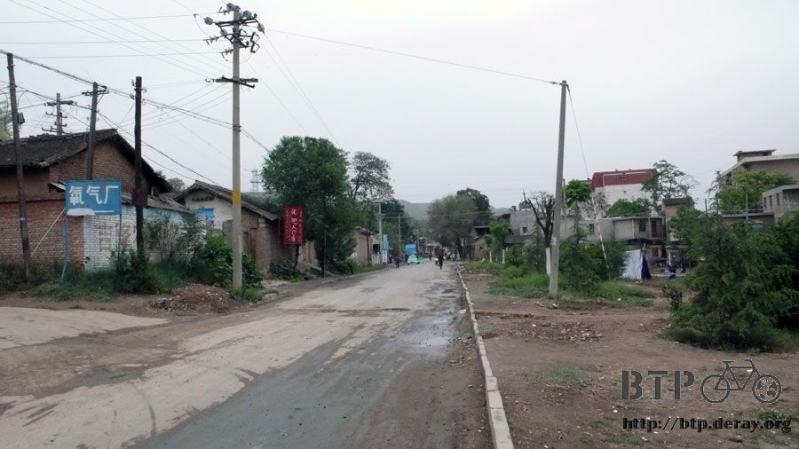
目前的海拔高度大約是一千公尺，一路往上爬，大概爬到一千六左右。
將小多靠在路邊的柱子，拍些照片，才再思考要不要拿出腳架自拍的時候，
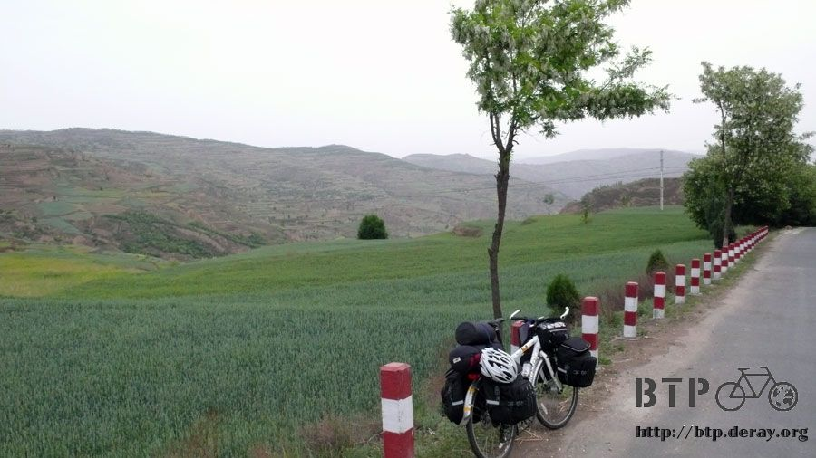
小多突然滑動了一下，我趕緊伸出手去拉它，雖然抓到了後面的背包，但是背包卻鬆脫了，
我整個人大叫『不要呀！』，然而小多和前面的背包則可憐的掉到三公尺下面的小麥田底下。
我的老天爺呀，摔的兩輪朝天，不知道有沒有損壞？

小心翼翼的滑下小麥田，在底下解開前面的背包，然後艱難的從下面把小多和我一起拉上來。
要是這時候有個人可以從上面幫忙那該多好>"<
小多上來之後，我還得再滑下去一次，然後拿著三個背包，一口氣在滑倒之前衝刺上去。
好加在小多沒怎麼樣，只是沾了點泥巴，拍一拍就好了，沒事沒事～小多我對不起你m(_ _)m
包包也是沾了泥巴，故意沒有拍得很乾淨，讓它看起來髒髒的，這樣顯得比較窮一點。
重新將背包掛回去，以後我再也不離開小多三步以上的距離拍照了/_\
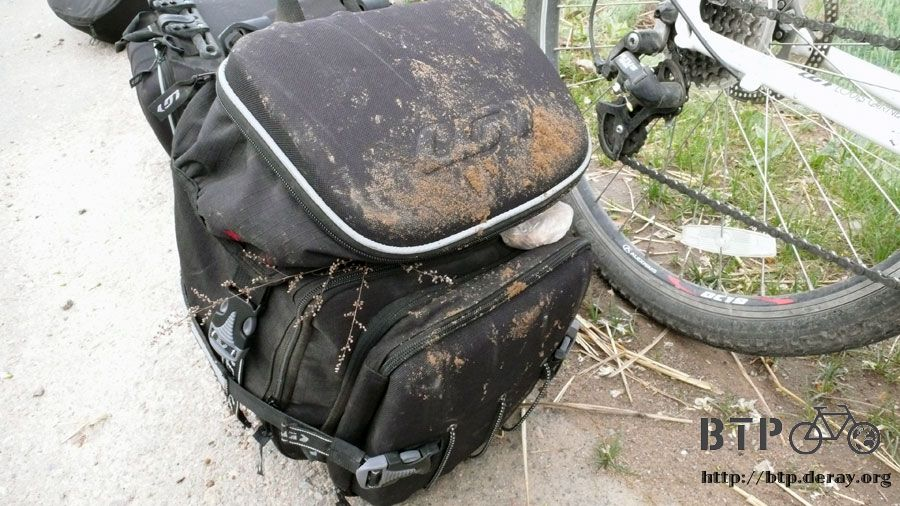
騎著山路，滿身大汗的翻過第一個山頭，然後又重新滑回山底，接著要爬第二個山頭，
心裡盤算著今天不知道要翻過幾個像這樣的山頭呢？
爬到第二個山頭的頂端，準備要滑下坡的時候，發現沒有下坡。
從這裡開始，就沿著一千六百公尺的山脊，平穩的騎車。
左右兩旁都比路還要低，兩邊都是開闊的山色，山被開發成梯田，更遠的山則在霧色之中。
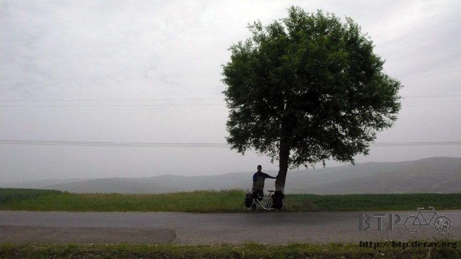
沿著山脊騎車，風景超好的！
這才叫做景緻嘛！騎車就是要看到像這樣的景色，辛苦才算有代價。
山上的氣溫很低，大概只有16~18度而已，而且山脊的風很大，側風由右向左吹，
小多加上行李加上我，至少超過130公斤，但還是被側風吹的左搖右擺。
萬一被吹下山脊了，那應該就不像剛才掉到三公尺下的小麥田那麼簡單了吧=..=

在山脊上，飛來飛去會咬人的小飛蟲不見了。
取而代之的是過馬路的小昆蟲，像蜈蚣、毛毛蟲、跟一些不知名的昆蟲。
不知道牠們這麼辛苦橫跨馬路要幹嘛？
雖然牠們對我無害，可是我不想讓小多啪滋啪滋的碾到小昆蟲，所以我還得注意避開這些小蟲。
騎在山脊上，少了上下坡的辛苦，幾乎是平路的方式在騎乘，非常的輕鬆愜意。
沒有走一堆大卡車的國道，選擇走小路真是個正確的選擇，而且這邊的路沒有想像中的爛。
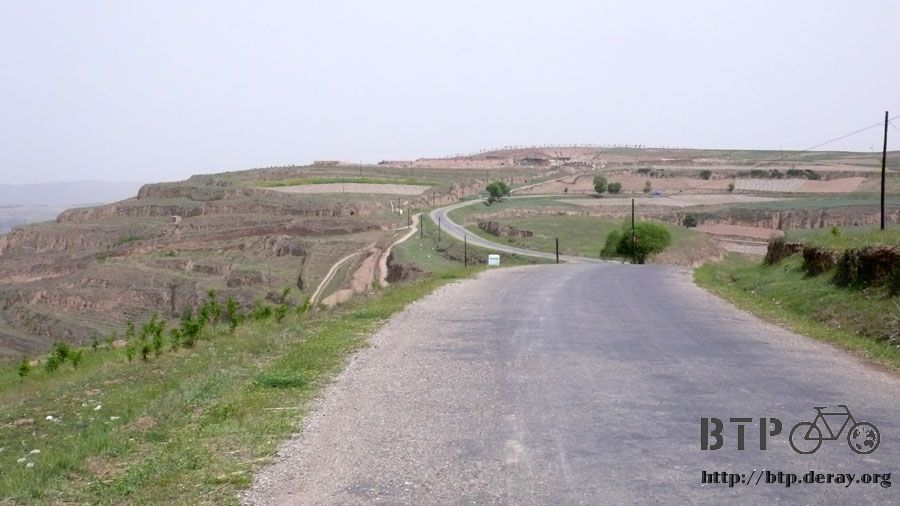
中午在山裡的小鎮『雲山』吃午餐，這邊很多房子，都是用泥巴糊起來的，配上瓦片屋頂也是一個溫暖的家。
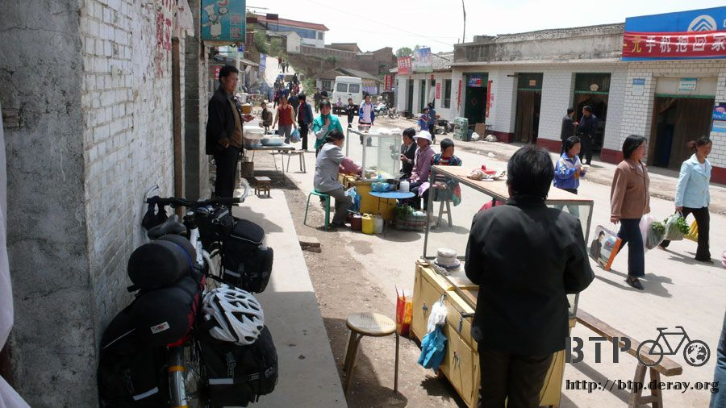
我點了一碗燴麵，在等麵上桌之前，我跑去買飲料喝。
看到一個一杯只要五毛錢的果汁，一時好奇怎麼會這麼便宜，就花一塊錢買了兩杯。
喝第一口就勾起了我童年的回憶。
這不就是小學的時候，校門口那些騙小孩的店，都會賣的果汁棒嗎？
就是那種一根一塊錢，五顏六色的口味，用透明小塑膠管裝著，冷凍起來就變成冰棒的東西。
雖然說是果汁棒，但其實根本就是色素糖水，可是小時候不知道為什麼會喜歡吃這種東西。
這種記憶中的食物，現在應該有錢也買不到了吧，想不到在中國的小鎮裡被我喝到了。
一模一樣的味道，那種色素糖水，0%果汁含量的果汁，好懷念呀T_T
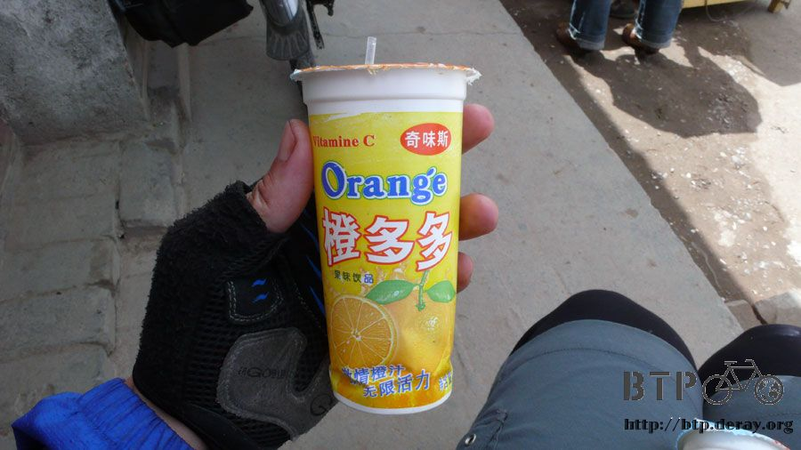
順便去對面的雜貨店採買零食，買了一斤像是營養口糧的餅乾，四塊錢就一大包。
另外還買了一包一毛錢的小餅乾，一口氣買20包，也才兩塊錢XD
接著我的麵就上桌了，捧著麵坐在店門口陪著小多，大口大口的享受我的午餐。
吃麵的時候，門口賣涼麵的孫女剛好下課回家，手裡拿了兩張考卷，一張100分、一張99分。
這邊人講話都講方言，跟我才說普通話，所以我都聽不懂他們在講什麼@@"
學校的教育則是方言和普通話一起教，而且方言還優於前頭，這樣的立意相當良好。
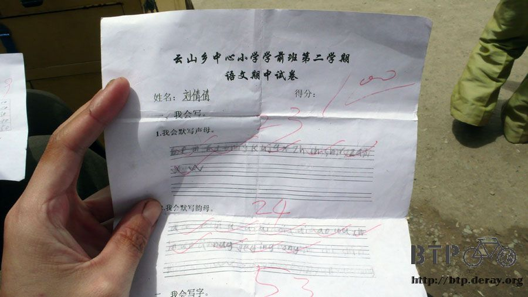
吃飽後就在門口坐著睡一下，一點繼續出發騎車。
在山裡面非常的安靜，除了偶爾會有一輛農用三輪車或是交通車經過之外，
整條路上就只有我一個人在騎車，要是連我也停下來，那就一點聲音也沒有，
完全是靜止的安靜，風景像一幅畫，地球像停止轉動，自己則不復存在。
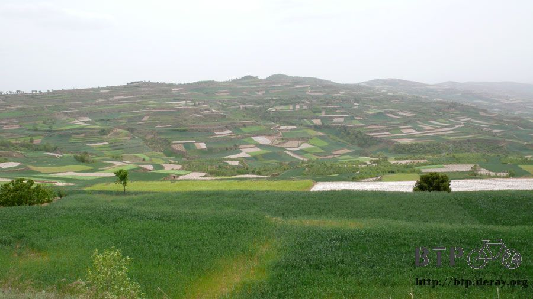
從雲山繼續騎了20公里的山脊路，經過一個很陡的下坡，就進入的第一站，秦家莊。
只在這裡買了一隻冰棒，跟老闆確認接下來要走的山路的方向，就直接出發，沒有多停留。
突然從寂靜的山中，回到吵雜的都市，有一種很不愉快的感覺，很想要再爬回山上。
要往今天的第二個目的地，仍然得要爬山，問了路人，他們指了指身後的山，
裡邊全是高山，你騎自行車，今天可能到不了，要睡在山裡。
另一個騎著紅色摩托車的年輕人，則指了另外一條路給我，從這邊走，路比較好，但是還是得爬山。
看起來很像是高速公路，自行車卻可以上，而且這條路，其實從天水就可以騎，
也就是說上午其實沒必要辛苦的騎到山裡，走這個路也是可以到的。
但是這條路真是保持了國道的無聊和沉悶，一點好看的風景也沒有，然後大卡車又開始叭叭叭的呼嘯而過。
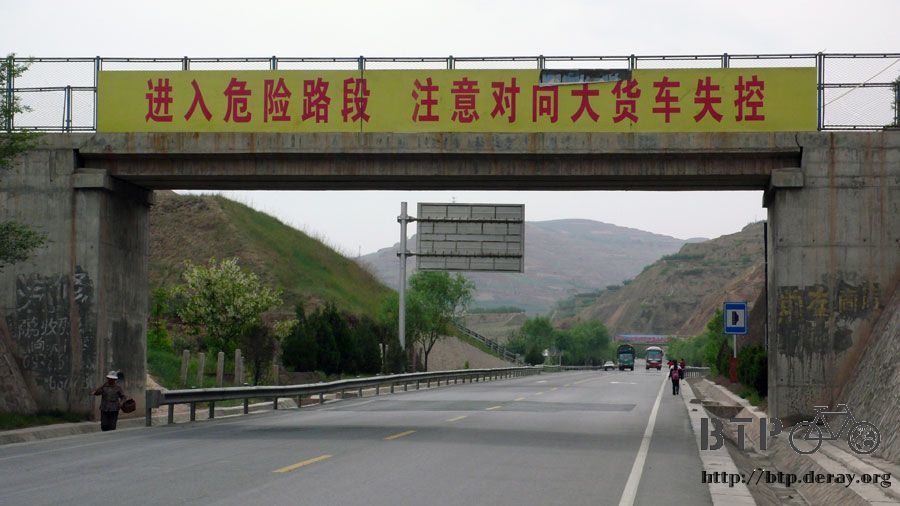
一進入公路開始就是爬坡地獄，連續爬25公里，花了三個小時。
若是平路的話，這點距離，只要一個小時就可以騎完。
所以今天抵達目的地的時間有點趕，有點擔心能不能在八點太陽下山之前抵達，不然我就要摸黑騎車了。
爬到公路的頂點，是警察在檢查大卡車的哨點，這種地方都沒我的事情，我只要從旁邊靜靜的走過去就好了。
結果這次居然被公安給攔了下來，公安招了招手叫我過去，我還以為要幹嘛，台胞證都準備要掏出來了。
原來只是看我騎車爬坡跟狗一樣的累，幫我補充一點開水，順便讓我休息一下而已。
沒事就好，拍張照做紀念，現在中國的公安也都開始正名變成警察了。
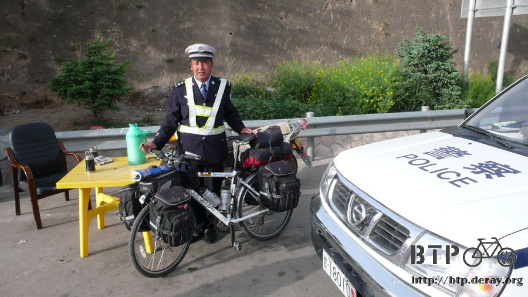
過了這個檢查點，路就比較好走了，開始有下坡和平路，
從一進入公路開始，爬了六百公尺高的斜坡，結果只往下滑了一百公尺，然後就停在海拔一千五的地方。
繼續艱辛的騎車，希望太陽可以為我加班一下，晚一點在收工，八點整，我總算看到城市的影子，
通渭終於到了，一下出口交流道，太陽就跟我說掰掰，明天見了。
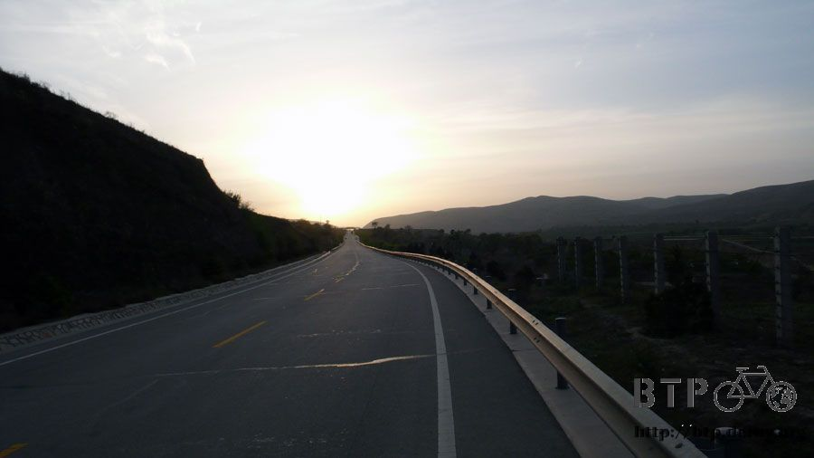
找了一間一晚只要十元的招待所，但是沒有空房了，唯一一間還有床位的是雙人房，已經先住了一個記者在裡面。
昨天我是那個先住，然後被打擾的人，今天就要換我去打擾別人了。
行李跟小多搬到三樓請旅館的人先幫我顧一下，怕放房間裡會掉東西，我則跑去街上吃飯。
隨便點了回鍋肉、白麵皮跟雞蛋湯，才吃一半就覺得肚子很不舒服，整個人頭暈得很想睡覺和嘔吐，
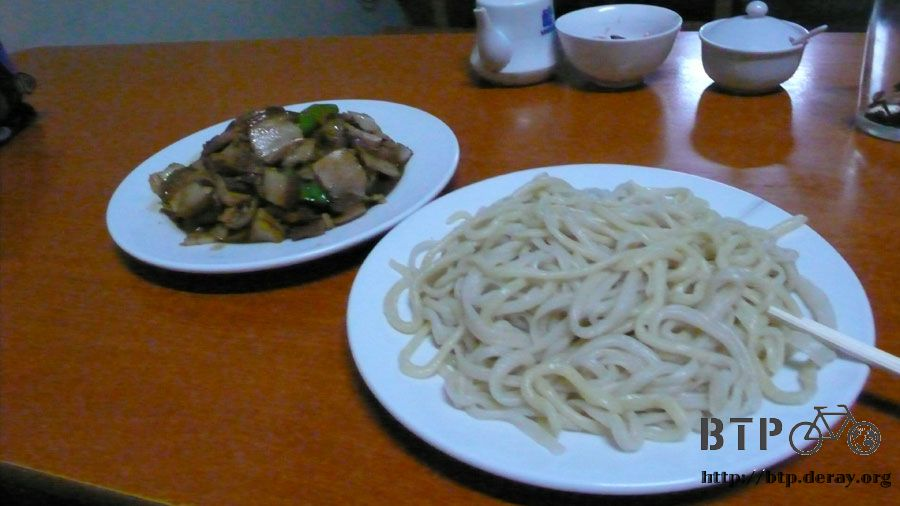
吃不到一半就覺得再吃下去會有生命危險，付錢買單，走出飯館的時候連步伐都不穩，像喝醉酒一樣。
走回招待所的一百公尺路，我必須要先走一半，坐在路邊休息五分鐘，然後勉強起身走回去。
感覺不舒服有幾個可能，也許是中午那兩杯色素糖水、或是騎山路太疲憊、
頭吹了太多冷風、不小心吃到一隻有毒的小飛蟲，或是餐廳的食物不衛生。
招待所的年輕男老闆(他剛當爸爸，手中抱著一個新生的小寶寶，恭喜他)，因為他看過很多要騎自行車去新疆的人，
所以對我很好，他看到我臉色發青，走路搖搖晃晃，雙手環抱著肚子，問我怎麼了？
我說胃不太舒服，感覺很寒冷，好像吃了奇怪的東西的樣子。
男老闆拿了一包紅糖給我，要我用熱水泡來喝，可以暖胃。
一開始覺得應該沒什麼用，但乖乖的喝了一大杯之後，身體真的好很多，沒有快死掉的感覺了。
今天騎山路，還很拼的騎一百五十公里，有點頭殼壞掉，如果許可的話，明天真想在這邊睡一整天恢復精神。
附注：今天是沒洗澡的第二天(得意的笑)
繼續閱讀：5.12 往蘭州的路上
中國-人民幣－ 1：4.3 台幣
5.11 |
總計：37.5元 |
早餐酸菜盒五個3元、午餐燴麵3.5元、零嘴6元、晚餐白麵皮、回鍋肉、雞蛋湯14元、冰棒兩隻1元、住店10元 |
|